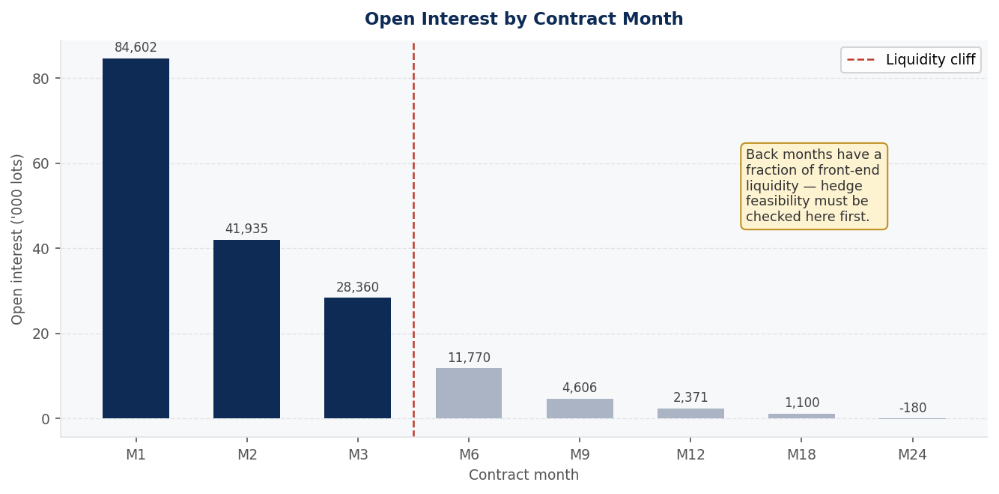
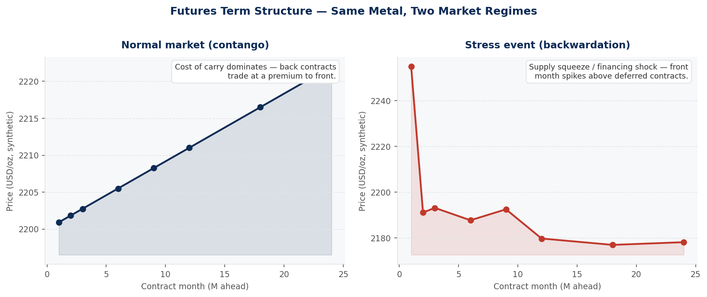
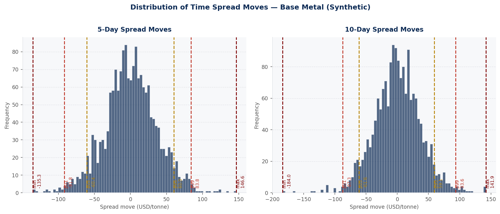
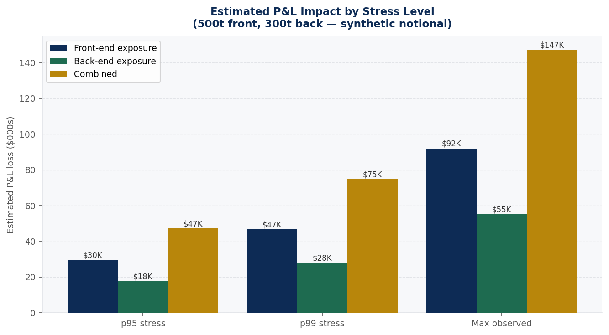
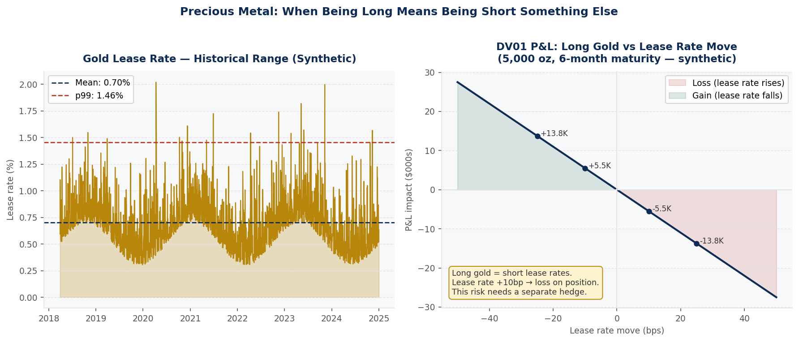

A quantitative framework for evaluating hedge feasibility and stress-testing spread exposures across a metals derivatives book — built from methodology I learned doing this analysis for real.
When a trading desk evaluates a client's metals exposure and is asked to design a hedge, the temptation is to jump straight to the hedge structure. The better question is: can this actually be hedged? A structure that looks correct on a term sheet is worthless if it can't actually be executed without moving the market against you.
This is a real business pain for anyone structuring metals derivatives: clients and internal stakeholders want a hedge recommendation, but the recommendation is only as good as the liquidity and stress analysis underneath it. Skipping that analysis — or doing it superficially — is exactly how a desk ends up recommending a hedge it can't actually put on at a reasonable cost.
The tempting shortcut is to treat the book as one directional exposure and stress-test a single number. I rejected that: a metals book combines near-term and deferred positions that respond to completely different drivers, and collapsing them into one number hides exactly where the risk is concentrated.
I chose to decompose the book into time spreads first — separating front-end (execution/ slippage) risk from back-end (structural holding) risk — and only then apply stress statistics to each piece separately, checking liquidity via open interest before doing anything else.
Single blended directional stress number. Hides whether the risk is concentrated in near-term execution or long-dated holding — two problems that need two different hedges.
Liquidity check → time-spread decomposition → separate front/back stress. Surfaces where the risk actually sits and whether the hedge is even executable before recommending a structure.
Rolling N-day statistics (max, p99, p95, min) across multiple window lengths — this is fundamentally a rolling-window problem, and pandas' rolling operations make multi-window comparison straightforward.
Rather than assuming liquidity, treating it as a first-class, checked input — the cheapest way to catch an unhedgeable structure before any stress modelling effort is spent on it.
Standard price-based hedging doesn't capture lease-rate risk, which is specific to precious metals financing — a separate DV01 calculation was necessary rather than optional.
Term-structure and distribution charts that make regime shifts (contango vs. backwardation) visually immediate rather than buried in a table of numbers.

A metals book isn't a single directional exposure. It's a combination of near-term positions (front contracts, subject to short-term slippage) and back-end positions (deferred contracts, exposed to longer-term structural moves). These don't move together.
The right way to analyse this is to decompose the risk into time spreads — the price difference between front and back contracts — and analyse those separately. In a normal market (contango), back contracts trade at a premium to front. In a supply squeeze or financing stress, the curve flips into backwardation: front contracts spike and back months lag. The shape of the curve tells you where the stress is concentrated.

Once the risk is decomposed into spreads, the stress analysis asks: how much has this spread historically moved over a given holding period? The methodology is straightforward but requires care in execution: compute the rolling N-day change in the spread price, then extract the distribution of those moves.
The key statistics are max, p99, p95, min — and we calculated these for multiple windows (1-day, 5-day, 10-day, 20-day). The 10-day window is the most relevant for a hedging horizon where you might need several days to put on or take off a position. The p99 tells you what happened 99% of the time; the max tells you what the worst single episode looked like.

The stress statistics only become useful when multiplied through a position size. The insight from decomposing into time spreads is that the front-end and back-end risks have different stress profiles — and combining them into a single number hides that.
We modelled the P&L impact at each stress level separately for the front-end slippage exposure (the risk you carry while getting the hedge on) and the back-end holding exposure (the longer-term risk on the book). The combined number is the sum, but the breakdown tells you where to focus hedging effort.

One of the most interesting parts of this analysis was the precious metal component. In base metals, a long position is simply long price — you hedge it by going short futures. In gold, there's an additional dimension: lease rates.
Gold is unique because it can be lent — central banks and holders lease their gold to market participants who need physical supply. The lease rate is effectively the cost of borrowing gold. A long gold position earns this yield — but it also means you are short the lease rate. If lease rates rise (which can happen in periods of physical tightness), the forward curve shifts against your position independently of the spot price move. This is a DV01 risk, and it needs a different hedge than the directional price exposure.

More windows, more percentile cuts, more decomposition layers are always possible. The real discipline was deciding when the analysis had enough rigor to support a yes/no decision, rather than continuing to add windows and cuts without a clear stopping point.
In a spreadsheet-driven risk analysis, the most dangerous error isn't the wrong model — it's a calculation that looks plausible but is silently wrong. Cross-checking spread P&L attribution, verifying the N-day window was computing what I thought, and confirming position signs were consistent took as much effort as the analysis itself.
The final recommendation on a trade's viability rests on these numbers being right. Getting to "yes" or "no" with confidence is the output; the rigor of the analysis — liquidity first, decomposition second, stress third, rate risk last — is what earns that confidence.